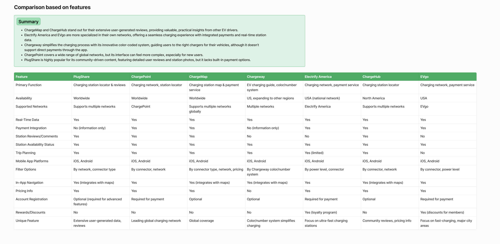
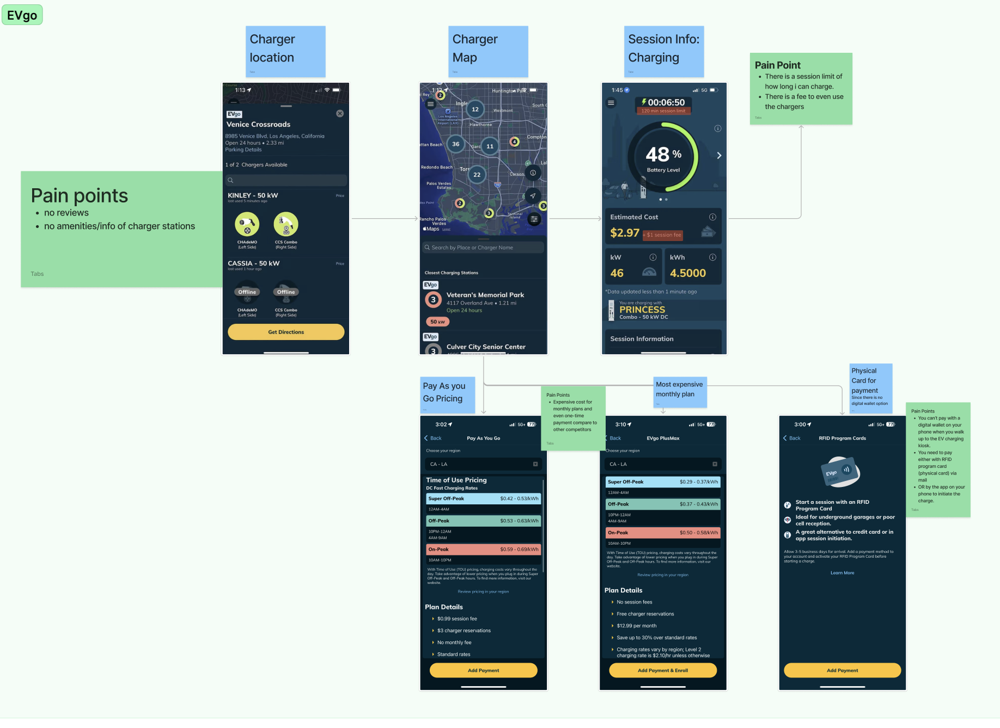
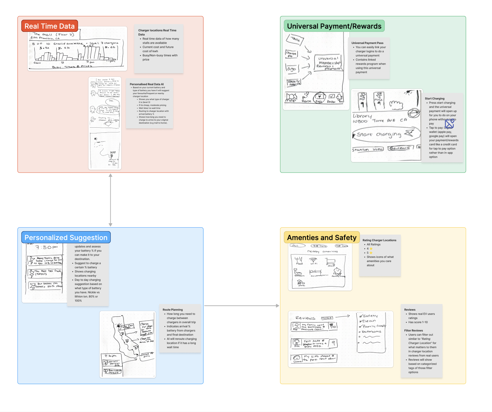
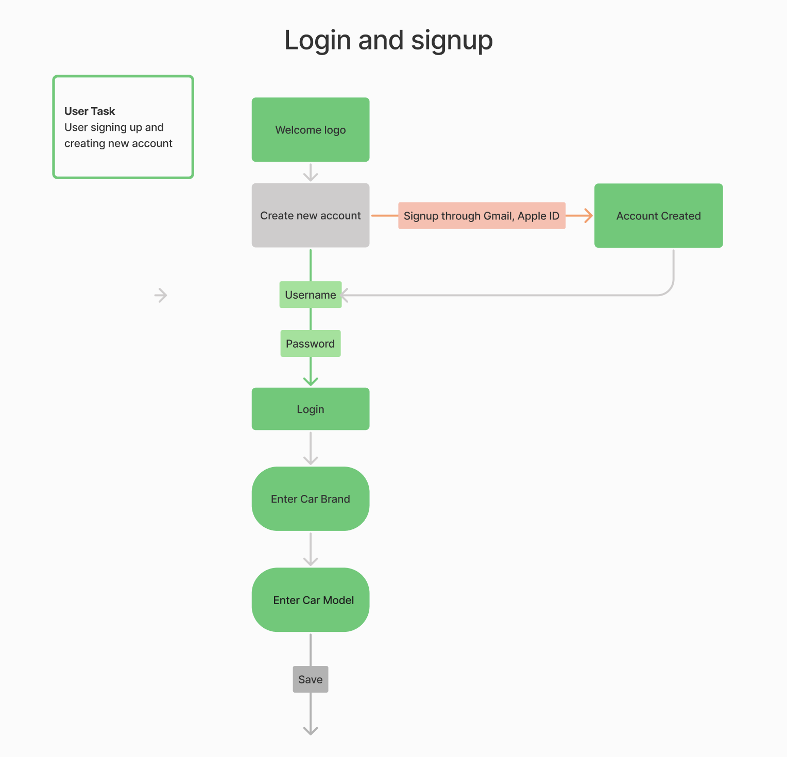
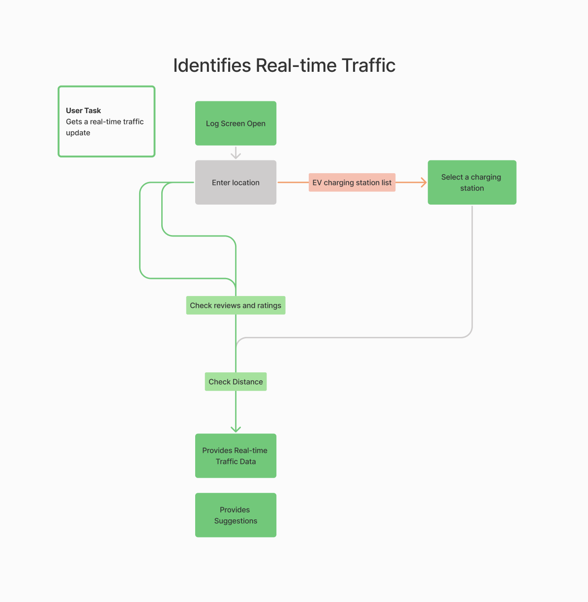
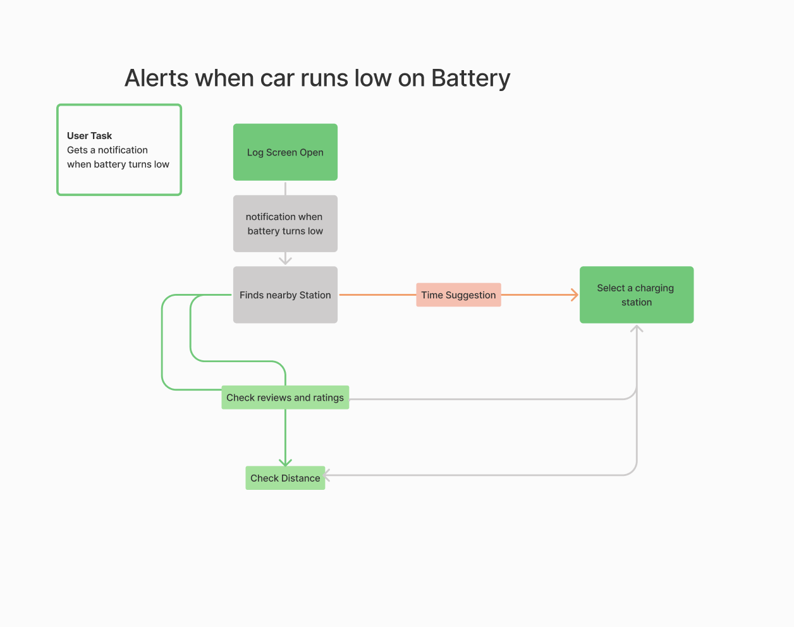
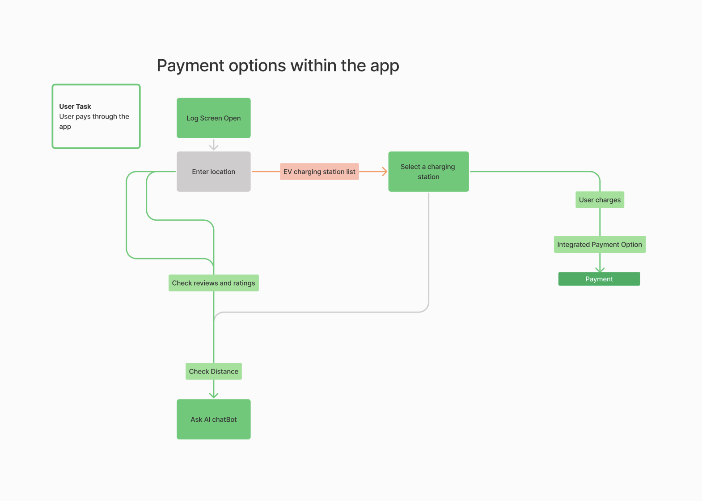
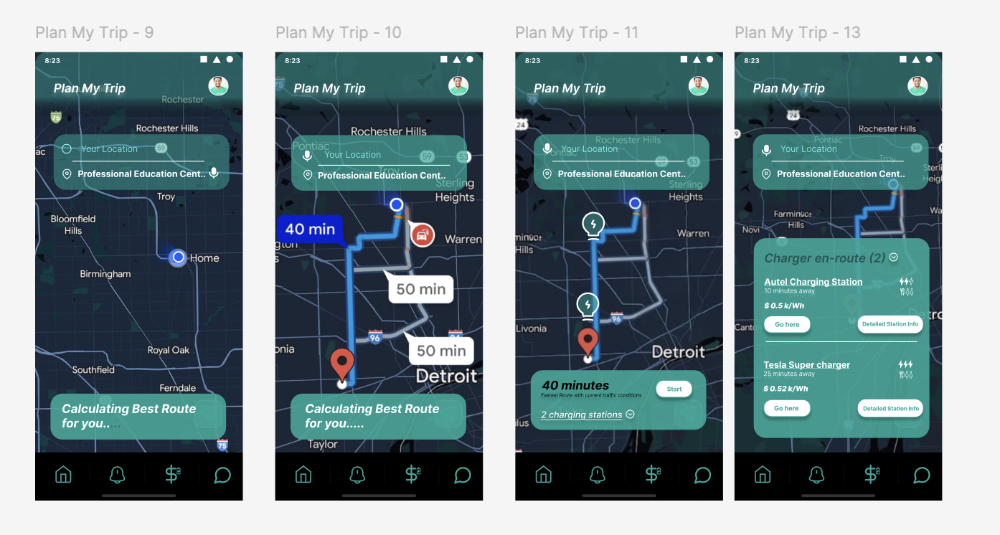
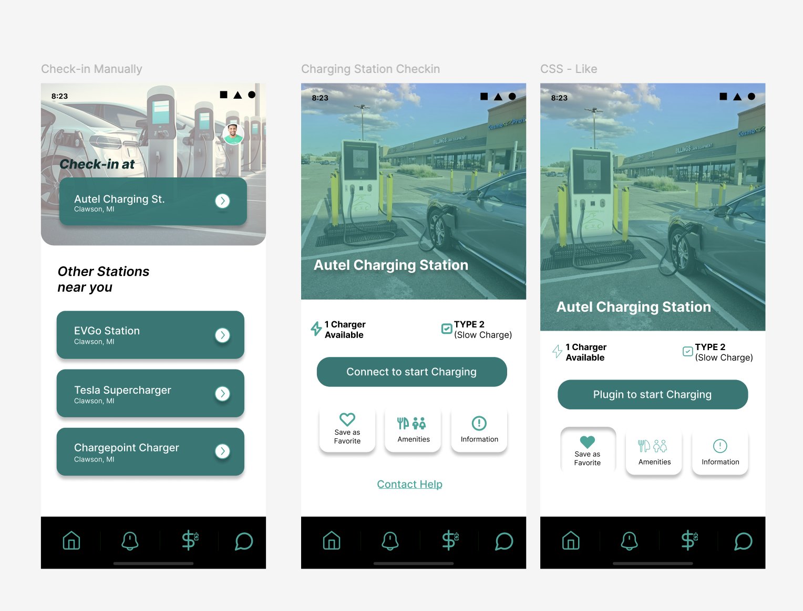
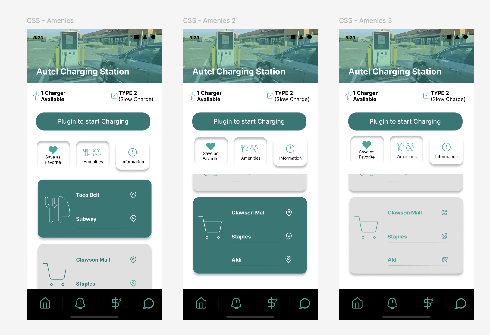

One app for every charger
Electric cars have the range. What fails drivers is the software: too many apps, RFID cards, and chargers that turn out to be broken. I designed one app that finds a working charger and pays for it.
one app, one payment, every network
- My role
- UX Designer, solo
- Timeline
- Human Factors course, 2024
- Type
- Mobile app with live charger data
- Status
- Concept, not shipped
The scope
The short version
It's really a trust problem
Drivers can't tell if a charger works until they get there, and every network wants its own app or card.
Research, audit, design
Compared research papers, industry reports and owner forums, audited 4 apps task by task, then designed 4 core flows.
One flow, start to finish
Find a working charger, drive there, charge and pay in one app, with no RFID card. It's a concept, so there are no launch numbers.
Five steps, from forums to final screens
Research: three sources, one pattern
Research papers, industry reports and EV owner forums all pointed to the same top problems: broken chargers with no warning, confusing payment across networks, and no safety or amenity info at stations.
Meet Sam, 31
She commutes 18 miles a day in her electric car with no trouble. Now she's planning her first 80-mile road trip, and she has only ever charged at home.
- No way to tellThree stations on the map, no ratings, no sign of which ones work.
- Broken chargerShe drives 38 miles to an "Out of Service" sticker.
- Another appThe next charger needs a different app and a membership: 12 minutes in a parking lot.
- Just makes itShe arrives with 11% battery and takes the same road home out of caution.
Audit: where today's apps fall short
- EVgo: some stations still need an RFID card, plus a subscription.
- ChargePoint: big network, confusing pricing, no cross-network payment.
- Tesla: works beautifully, but only for Teslas.
- Every network: no reviews, safety or amenity info at the station.
No app closes the loop from finding a charger to paying for it. That gap became the product.


Ideas: sketch first, then pick
I sketched by hand in four groups: live data, one payment, personal suggestions, and amenities and safety. Then I kept four features:
- Battery health over time, so charging habits are visible.
- Low-battery alert that points to the nearest working charger.
- One payment that works on every network.
- Live reviews on reliability, safety and amenities.

Flows: the four core tasks
Each feature maps to one task, mapped step by step before any screen was drawn.




Final design: readable in two seconds
People use this standing at a charger, one-handed, often at night. So color carries the meaning first: green works, red doesn't, amber is unknown.



What this taught me
Range anxiety is about trust
Reliable information fixes it, not bigger batteries.
Glanceable beats dense
At a charger, people need the answer in one look, not more data.
Drivers trust drivers
Reviews from other owners feel more reliable than what the network says.
Open the Figma file ↗"If I knew the charger was going to work before I drove there, I wouldn't need 80% of the anxiety-management features I've invented for myself."
EV owner, interview participant